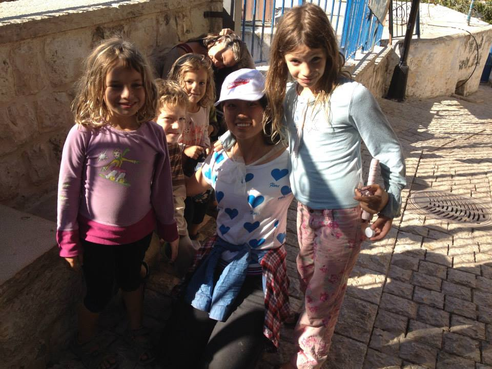

正文:
真的能，而且改变很大。 旅行让人变得谦逊、包容、乐观、坚韧，表现在外就是一种见过大世面的气质。
我的家乡在太行山区，四面环山的家乡，让幼小的我以为这个世界就该是这个样子的。直到5岁那年第一次到远方亲戚家里小住。广袤的华北平原的村庄，让我第一次体会到了什么叫做辽阔。虽然那时候还太小，但那种震撼还是十分巨大的。后来，我开始领会“野旷天低树”的辽远壮阔，开始明白“星垂平野阔”的浩瀚寂寥。我相信，如果不是幼年的那次“旅行”，我甚至无法明白“太阳从地平面升起”是什么感觉。
旅行能治中二。想起那时，正是中二好青年的我，和很多同龄人一样，容易变得愤慨。后来在旅途中逐渐明白，很多东西我们以为不存在，只是因为我们没见过。我在华南一个繁荣的村镇里，看到了香火鼎盛的家族宗庙，才感悟到了数千年来流传不息的宗庙文化；我在扬州茶楼里吃早点，看着几乎每个人早点都离不开茶，才知道茶在中国人生活中的份量；我穿过风萧萧的秦川大地，走过苍茫茫的黄土高原；我踏上过东北的黑土地，惊讶于西南的紫土农田，看过了江南的红壤后，再不敢将脚下的黄土地视为理所当然……当然，我去过的地方并不多，但这足以让我明白，我所在的地方并不是整个中国，我习以为常的东西并不是所有人都可以理解，我所以为的，很多时候并不是我以为的那样。这样的道理可能谁都明白，但不是亲眼见到，很多人并不能真正做到。
旅行让人懂得谦卑。出生在中国N线山区城镇的我(N>>3），小时候还和身边的朋友炫耀过自己坐过地铁(其实那时候是真心炫耀，小伙伴们也是真心羡慕。当现在的我挤在帝都的宇宙一号线上时，想想当初的我是多么可笑）；我第一次见外国友人时，鼓起好大勇气主动搭讪，并为我抓住机会练口语的勇气自豪了好久(现在想想分明就是骚扰他人啊……)；第一次坐飞机时，足足提前了8个小时到机场，既好奇周围的一切东西，又怕别人看出来自己是没坐过飞机的土冒(现在想想真的是谁顾上看你)；第一次出国时，回来几乎逢人就找机会提一句，我一个人在XX国的时候……
我觉得，每个人都会有这样的时候，只是你将这个时候提得越早，旅行对你的改变就越大。当你见过最好的，体验过最差的，在旅途中认识了各种各样的人之后，不用刻意抑制，自然就不会这个样子了。在旅途中认识的一个去过四十多个国家的上海女孩，她自然不会觉得坐飞机有什么大不了的；身边有个出生在英国的同学，她自然无法体会出趟国对我的意义有多大；当然，帝都所有每天坐着地铁上下学的小朋友们，自然会笑话我，这也值得炫耀？
我的父母没能为我提供这么早接触世界的平台，我不怪他们，但也绝不希望自己的下一代也和当年的自己一样，拿着无知和浅薄当作炫耀的资本。这也是我奋斗的动力之一。
旅行对人有改变吗？当然有，而且年纪越小，改变越大，大到都已经内化为你自己性格的一部分，反而看不出来有什么影响了。
都说上图可以吸引人，那就上一张最难忘的吧~

在以色列，海法，东亚人很少。几个小朋友看到我后，怯生生地用笨笨的英语问我是不是中国人。我回答yes之后，他们很明显表现出欢欣鼓舞的样子，甚至有个七八岁的小女孩很开心地告诉我："I like Chinese people."，然后很高兴地要和我一起合影。
人之初如璞玉，仅仅因为我是中国人，一群陌生的孩子就对我如此喜爱，是我对这个国家最最深刻的印象。